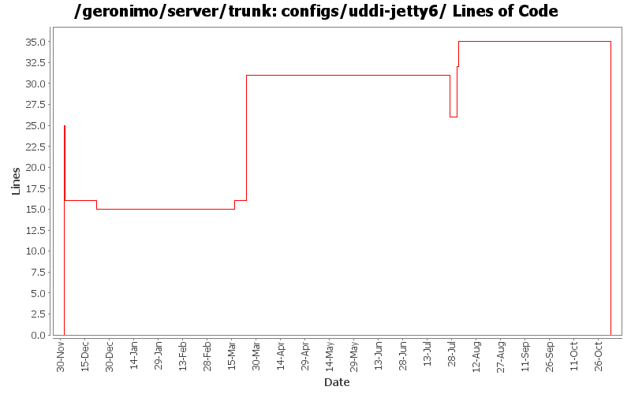

[root]/configs/uddi-jetty6
 src
(0 files, 0 lines)
src
(0 files, 0 lines)
 main
(0 files, 0 lines)
main
(0 files, 0 lines)
 plan
(0 files, 0 lines)
plan
(0 files, 0 lines)
 plan
(0 files, 0 lines)
plan
(0 files, 0 lines)

| Author | Changes | Lines of Code | Lines per Change |
|---|---|---|---|
| Totals | 16 (100.0%) | 71 (100.0%) | 4.4 |
| djencks | 7 (43.8%) | 50 (70.4%) | 7.1 |
| jdillon | 1 (6.3%) | 16 (22.5%) | 16.0 |
| prasad | 4 (25.0%) | 3 (4.2%) | 0.7 |
| jbohn | 1 (6.3%) | 1 (1.4%) | 1.0 |
| hogstrom | 1 (6.3%) | 1 (1.4%) | 1.0 |
| linsun | 1 (6.3%) | 0 (0.0%) | 0.0 |
| akulshreshtha | 1 (6.3%) | 0 (0.0%) | 0.0 |
GERONIMO-3565. Configs distributed amongst framework/configs and plugins
0 lines of code changed in 3 files:
* updated copyright date to 2007
3 lines of code changed in 1 file:
GERONIMO-2286 GERONIMO-1874 GERONIMO-3140 Use patterns for external-rar in app client plans and external-path in ear plan external modules. Allow partial artifacts and use an ArtifactResolver to fill in the missing bits. Use client_artifact_aliases.properties in the app client builder to help avoid using server side modules when client side modules are intended for runtime. This is not backward compatible for apps using external-rar or external-path.
6 lines of code changed in 1 file:
remove commented out scout dependency here - guess it was there because of the 0.7 level of scout
0 lines of code changed in 1 file:
Changed trunk to 2.1-SNAPSHOT
1 lines of code changed in 1 file:
GERONIMO-3039, upgrade scout and fix some xmlbeans dependency issues. This is joes patch with tiny modifications
4 lines of code changed in 1 file:
GERONIMO-3039 move up to newer scout and create common xmlbean config
1 lines of code changed in 1 file:
GERONIMO-2965 GERONIMO-3008 GERONIMO-3010 Tomcat annotation processing with lots of other improvements. Uses LifecycleProvider interface proposed in GERONIMO-3010
15 lines of code changed in 1 file:
Normalize all configs/*/pom.xml headers
16 lines of code changed in 1 file:
Removed 1.2-SNAPSHOT version for tranql-connector-derby-embed-local rar in uddi-jetty6 config,
use version defined by the top level pom
0 lines of code changed in 1 file:
GERONIMO-2616 move all tx stuff to the transaction-jta1.1 config.
0 lines of code changed in 1 file:
GERONIMO-2616 Copy jee5 work from sandbox, make it build in normal build
25 lines of code changed in 3 files: